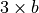

Player 1-3-2-6 Class¶
This section will describe a player who has a complex internal state. We will also digress on the way the states can be modeled using a group of polymorphic classes.
We’ll start by examining the essential 1-3-2-6 betting strategy in Player 1-3-2-6 Analysis.
This will lead us to considering stateful design and how to properly handle polymorphism. This is the subject of On Polymorphism.
We’ll address some additional design topics in Player 1-3-2-6 Questions and Answers.
The design is spread across several sections:
Once we’ve defined the various states, the overall player can be covered in Player1326 Design.
We’ll enumerate the deliverables in Player 1-3-2-6 Deliverables.
There are some more advanced topics here. First, we’ll look at alternative designs in Advanced Exercise – Refactoring. Then, we’ll look at ways to reuse state objects in Advanced Exercise – Less Object Creation. Finally, we’ll examine the Factory design pattern in Player1326 State Factory Design.
Player 1-3-2-6 Analysis¶
On the Internet, we found descriptions of a betting system called the “1-3-2-6” system. This system looks to recoup losses by waiting for four wins in a row. The sequence of numbers (1, 3, 2 and 6) are the multipliers to use when placing bets after winning.
The base bet,  is the table minimum.
At each loss, the sequence resets to the multiplier of 1. The bet is .
is the table minimum.
At each loss, the sequence resets to the multiplier of 1. The bet is .
At each win, the multiplier is advanced. It works like this:
After one win, the multiplier advances to 3×, the bet is . This is done by leaving the winnings in place, and adding to them.
After a second win, the bet is reduced to 2×, and the winnings of 4× are taken off the table.
In the event of a third win, the bet is advanced to 6× by putting the 4× back into play.
Should there be a fourth win, the sequence resets to 1×. The winnings from the final 6× bet are the hoped-for profit.
This betting system makes our player more stateful than in previous
betting systems. When designing the SevenReds class, we noted that
this player was stateful; that case, the state was a simple count.
In this case, the description of the betting system seems to identify four states: no wins, one win, two wins, and three wins. In each of these states, we have specific bets to place, and state transition rules that tell us what to do next. The following table summarizes the states, the bets and the transition rules.
Current State |
Bet Amount |
On loss, change to: |
On win, change to: |
|---|---|---|---|
No Wins |
1 |
One Win |
No Wins |
One Win |
3 |
Two Wins |
No Wins |
Two Wins |
2 |
Three Wins |
No Wins |
Three Wins |
6 |
No Wins |
No Wins |
When we are in a given state, the table gives us the amount to bet in the Bet column. If this bet wins, we transition to the state named in the On Win column, otherwise, we transition to the state named in the On Loss column. We always start in the No Wins state.
Design Pattern. We can exploit the State design pattern to implement this more sophisticated player. The design pattern suggests that we create a hierarchy of classes to represent these four states. Each state will have a slightly different bet amount, and different state transition rules. Each individual state class will be relatively simple, but we will have isolated the processing unique to each state into separate classes.
One of the consequences of the State design pattern is that
it obligates us to define the interface between the Player class
and the object that holds the Player object’s current state.
It seems best to have the state object follow the table shown above and provide three methods:
currentBet(), nextWon(), and nextLost().
The Player can use these methods of the state object to
place bets and pick a new state.
A state’s
currentBet()method will construct aBetobject from anOutcomeinstance that thePlayerobject keeps, and the multiplier that is unique to the state. As the state changes, the multiplier moves between 1, 3, 2 and 6.A state’s
nextWon()method constructs a new state object based on the state transition table when the last bet was a winner.A state’s
nextLost()method constructs a new state based on the state transition table when the last bet was a loser. In this case, all of the various states create a new instance of theNoWinsobject, resetting the multiplier to 1 and starting the sequence over again.
On Polymorphism¶
One very important note is that we never have to check the class of any object. This is so important, we will repeat it here.
Important
We don’t use isinstance().
We use polymorphism and design all subclasses to have the same interface.
Python relies on duck typing:
“if it walks like a duck and quacks like a duck, it is a duck”
This means we will define class membership using a very simple rule. If an object has the requested method, then it’s a member of the class.
This is unlike languages where class membership is defined by the hierarchy of class definitions. Python defines membership only by the presence of attributes and methods.
Additionally, Python relies on the principle that it’s better to seek forgiveness than ask permission.
This translates to an approach where an object’s methods are simply invoked. If the object implements the methods, then it walked like a duck and – for all practical purposes – actually was a duck. If the method is not implemented, the application has a serious design problem and needs to crash.
We find the isinstance() function is sometimes used by
beginning programmers who have failed to properly delegate
processing to the subclass.
Often, when a responsibility has been left out of the class hierarchy, it is allocated to the client object. The typical Pretty-Poor Polymorphism looks like the following:
Pretty Poor Polymorphism
class SomeClient:
def someMethod(self, x):
if isinstance(x, AClass):
Special Case that should have been part of AClass
In all cases, uses of isinstance() function must be examined
critically.
Generally, we can avoid isinstance() tests by refactoring the special
case out of the collaborating class. There will be three changes as part of the refactoring.
We will move the special-case the functionality into the class being referenced by the
isinstance()function. In the above example, the special case is moved to theAClassclass.We will usually have to add default processing to the superclass of
AClassso that all other sibling classes of theAClassclass will have an implementation of the special-case feature.We simply call the refactored method from the client class.
This refactoring leads to a class hierarchy that has the property of being polymorphic: all of the subclasses have the same interface: all objects of any class in the hierarchy are interchangeable. Each object is, therefore, responsible for correct behavior. More important, a client object does not need to know which subclass the object is a member of: it simply invokes methods which are defined with a uniform interface across all subclasses.
Player 1-3-2-6 Questions and Answers¶
Why code the state as objects?
The reason for encoding a states as an object is to encapsulate the information and the behavior associated with that state. In this case, we have both the bet amount and the rules for transition to next state. While simple, these are still unique to each state.
Since this is a book on design, we feel compelled to present the best design. In games like blackjack, the player’s state may have much more complex information and behavior. In those games, this design pattern will be very helpful. In this one case only, the design pattern appears to be over-engineered.
We will use this same design pattern to model the state changes in the Craps game itself. In the case of the Craps game, there is additional information as well as behavior changes. When the state changes, bets are won or lost, bets are working or not, and outcomes are allowed or prohibited.
Isn’t it simpler to code the state as a number? We can just increment when we win, and reset to zero when we lose.
The answer to all “isn’t it simpler” questions is “yes, but…” In this case, the full answer is “Yes, but what happens when you add a state or the states become more complex?”
This question arises frequently in OO programming. Variations on this question include “Why is this an entire object?” and “Isn’t an object over-engineering this primitive type?” See Design Decision – Object Identity FAQ entry on the
Outcomeclass for additional background on object identity.Our goal in OO design is to isolate responsibility. First, and most important, we can unambiguously isolate the responsibilities for each individual state. Second, we find that it is very common that only one state changes, or new states get added. Given these two conditions, the best object model is separate state objects.
Doesn’t this create a vast number of state objects at run time?
Yes.
There are two usual follow-up questions: “Aren’t all those objects a lot of memory overhead?” or “…a lot of processing overhead?”
Since Python removes unused objects, each old state object are removed when no longer required.
Object creation is an overhead that we can control. One common approach is to use the Singleton design pattern to have only one instance of each class.
If performance becomes a problem, the rework can be helpful. Until performance is clearly a problem, there’s not benefit to the premature optimization of a non-problem.
Is Polymorphism necessary?
In some design patterns, like State and Command, it is essential that all subclasses have the same interface and be uniform, indistinguishable, almost anonymous instances. Because of this polymorphic property, the objects can be invoked in a completely uniform way.
In our exercise, we will design a number of different states for the player. Each state has the same interface. The actual values for the instance variables and the actual operation implemented by a subclass method will be unique. Since the interfaces are uniform, however, we can trust all state objects to behave properly.
There are numerous designs where polymorphism doesn’t matter at all. In many cases, the anonymous uniformity of subclasses isn’t relevant. When we look at the other casino games, we will see many examples of non-polymorphic class hierarchies. This will be due to the profound differences between the various games and their level of interaction with the players.
Player1326 State Design¶
-
class
Player1326State¶ Player1326Stateis the superclass for all of the states in the 1-3-2-6 betting system.
Fields¶
-
Player1326State.player¶ The
Player1326player currently in this state. This player object will be used to provide theOutcomeobject that will be used to create theBetinstance.
Constructors¶
-
Player1326State.__init__(self, player: Player) → None The constructor for this class saves the
Player1326instance.
Methods¶
-
Player1326State.currentBet(self) → Bet¶ Constructs a new
Betobject from the player’s preferredOutcomeinstance. Each subclass provides a different multiplier used when creating thisBetobject.In Python, the superclass method should return
NotImplemented. This is a big debugging aid, it helps us locate subclasses which did not provide a method body.
-
Player1326State.nextWon(self) → "Player1326State"¶ Constructs the new
Player1326Stateinstance to be used when the bet was a winner.In Python, this method should return
NotImplemented. This is a big debugging aid, it helps us locate subclasses which did not provide a method body.Note the type hint for this method is provided as a string. We can’t reference the
Player1326Statetype within the body of the class definition. Instead of naming the type directly, we use a string.def nextWon(self) -> "Player1326State": ...
-
Player1326State.nextLost(self) → "Player1326State" Constructs the new
Player1326Stateinstance to be used when the bet was a loser. This method is the same for each subclass: it creates a new instance ofPlayer1326NoWins.This defined in the superclass to assure that it is available for each subclass.
Player1326 No Wins Design¶
-
class
Player1326NoWins¶ Player1326NoWinsdefines the bet and state transition rules in the 1-3-2-6 betting system. When there are no wins, the base bet value of 1 is used.
Methods¶
-
Player1326NoWins.currentBet(self) → Bet¶ Constructs a new
Betfrom the player’soutcomeinformation. The bet multiplier is 1.
-
Player1326NoWins.nextWon(self) → Player1326State¶ Constructs the new
Player1326OneWininstance to be used when the bet was a winner.
Player1326 One Win Design¶
-
class
Player1326OneWin¶ Player1326OneWindefines the bet and state transition rules in the 1-3-2-6 betting system. When there is one wins, the base bet value of 3 is used.
Methods¶
-
Player1326OneWin.currentBet(self) → Bet¶ Constructs a new
Betfrom the player’soutcomeinformation. The bet multiplier is 3.
-
Player1326OneWin.nextWon(self) → Player1326State¶ Constructs the new
Player1326TwoWinsinstance to be used when the bet was a winner.
Player1326 Two Wins Design¶
-
class
Player1326TwoWins¶ Player1326TwoWinsdefines the bet and state transition rules in the 1-3-2-6 betting system. When there are two wins, the base bet value of 2 is used.
Methods¶
-
Player1326TwoWins.currentBet(self) → Bet¶ Constructs a new
Betfrom the player’soutcomeinformation. The bet multiplier is 2.
-
Player1326TwoWins.nextWon(self) → Player1326State¶ Constructs the new
Player1326ThreeWinsinstance to be used when the bet was a winner.
Player1326 Three Wins¶
-
class
Player1326ThreeWins¶ Player1326ThreeWinsdefines the bet and state transition rules in the 1-3-2-6 betting system. When there are three wins, the base bet value of 6 is used.
Methods¶
-
Player1326ThreeWins.currentBet(self) → Bet¶ Constructs a new
Betfrom the player’soutcomeinformation. The bet multiplier is 6.
-
Player1326ThreeWins.nextWon(self) → Player1326State¶ Constructs the new
Player1326NoWinsinstance to be used when the bet was a winner.An alternative is to update the player to indicate that the player is finished playing.
Player1326 Design¶
-
class
Player1326¶ Player1326follows the 1-3-2-6 betting system. The player has a preferredOutcomeinstance. This should be an even money bet like red, black, even, odd, high or low. The player also has a current betting state that determines the current bet to place, and what next state applies when the bet has won or lost.
Fields¶
-
Player1326.outcome¶ This is the player’s preferred
Outcomeinstance. During construction, the Player must fetch this from theWheelobject.
-
Player1326.state¶ This is the current state of the 1-3-2-6 betting system. It will be an instance of a subclass of
Player1326Stateclass. This will be one of the four states: No Wins, One Win, Two Wins or Three Wins.
Constructors¶
-
Player1326.__init__(self, table: Table) → None Initializes the state and the outcome. The
stateis set to the initial state of an instance ofPlayer1326NoWinsclass.The
outcomeis set to some even money proposition, for example"Black". The code should be something liketable.wheel.getOutcome("Black").
Methods¶
-
Player1326.placeBets(self) Updates the
Tablewith a bet created by the current state. This method delegates the bet creation tostateobject’scurrentBet()method.
Player 1-3-2-6 Deliverables¶
There are eight deliverables for this exercise. Additionally, there is an optional, more advanced design exercise in a separate section.
The five classes that make up the
Player1326Stateclass hierarchy.The
Player1326class.A Unit test for the entire
Player1326Stateclass hierarchy. It’s possible to unit test each state class, but they’re so simple that it’s often easier to simply test the entire hierarchy.A unit test of the
Player1326class. This test should synthesize a fixed list ofOutcomeinstances,Bininstances, and calls aPlayer1326instance with various sequences of reds and blacks. There are 16 different sequences of four winning and losing bets. These range from four losses in a row to four wins in a row.An update to the overall
Simulatorthat uses thePlayer1326.
Advanced Exercise – Refactoring¶
Initially, each subclass of Player1326State has a unique currentBet()
method.
This class can be simplified slightly to have the bet multiplier
coded as an instance variable, betAmount.
The currentBet() method can be refactored into the superclass to use
the betAmount value.
This would
simplify each subclass to be only a constructor that sets the betAmount
multiplier to a value of 1, 3, 2 or 6.
Similarly, we could have the next state after winning defined as
an instance variable, nextStateWin. We can
initialized this during construction. Then the nextWon()
method could also be refactored into the superclass, and would
return the value of the nextStateWin instance variable.
The deliverable for this exercise is an alternative
Player1326State class using just one class and distinct
constructors that create each state object with an appropriate
bet multiplier and and next state win value.
Advanced Exercise – Less Object Creation¶
The object creation for each state change can make this player rather slow.
There are a few design pattens that can reduce the number of objects that need to be created.
Global objects for the distinct state objects.
While truly global objects are usually a mistake, we can justify this by claiming that we’re only creating objects that are shared among a few objects.
The objects aren’t global variables: they’re global constants. There’s no state change, so they aren’t going to be shared improperly.
The Singleton design pattern.
With some cleverness, this can be made transparent in Python. However, it’s easiest to make this explicit, by defining a formal
instance()method that fetches (or creates) the one-and-only instance of the class.A Factory object that produces state objects. This Factory can retain a small pool of object instances, eliminating needless object construction.
The deliverables for this exercise are revisions to the Player1326State
class hierarchy to implement the Factory design pattern.
This will not change any of the existing unit tests, demonstrations or
application programs.
Player1326 State Factory Design¶
-
Player1326StateFactory.values¶ This is a map from a class name to an object instance.
-
Player1326StateFactory.__init__(self) → None¶ Create a new mapping from the class name to object instance. There are only four objects, so this is relatively simple.
-
Player1326StateFactory.get(self, name: str) → Player1326State¶ - Parameters
name (String) – name of one of the subclasses of
Player1326State.- Returns
a fresh new instance of the desired state
- Return type
Looking Forward¶
There are other stateful betting strategies. In the next chapter we’ll use built-in classes to maintain the state for the Cancellation betting strategy.